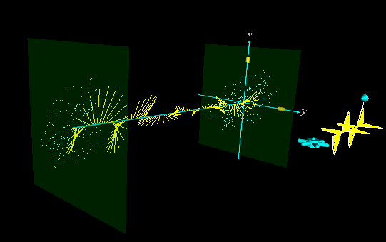

| 1.4 Unpolarized Light (Natural Light)
Unpolarized light is depicted in Fig. 16 below. It
is a succession of elliptically polarized wave packets. The state of
polarization varies randomly from wave packet to wave packet.
|  |
Figure 16 Unpolarized light. The dots in the input and
output denote past locations of the tip of E at equally
spaced times. Note the randomness and isotropy of these locations.  |
How do we treat this mathematically? Since a vector can always be
decomposed into orthogonal components, the electric field can be written
as:
The quantities Ex(z,t), and Ey(z,t),
vary rapidly from wave packet to wave packet. Since there is no
preferred direction,
The irradiance is given by the formula
It follows from Eqs. (1.17) and (1.19)
that for unpolarized light, we may view the x-component of the electric
field to contain half the irradiance and the y-component to contain half:
Previous Page/Next Page
|